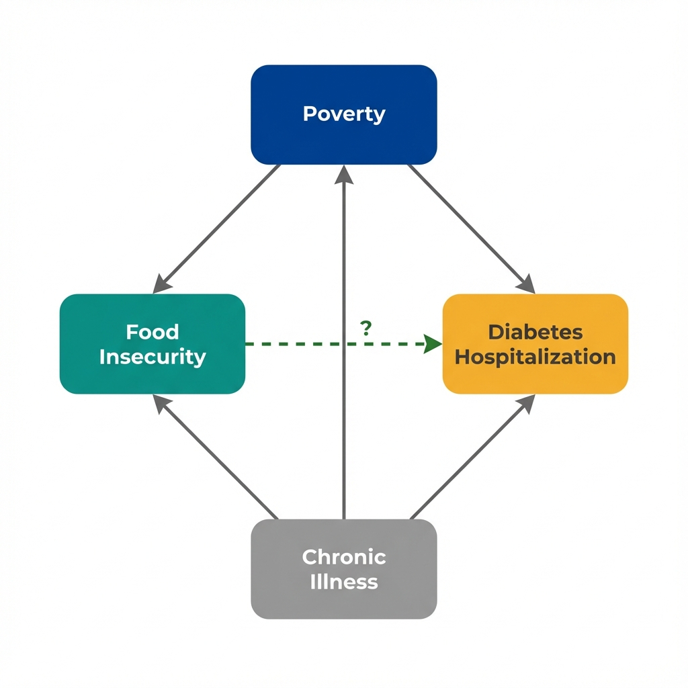
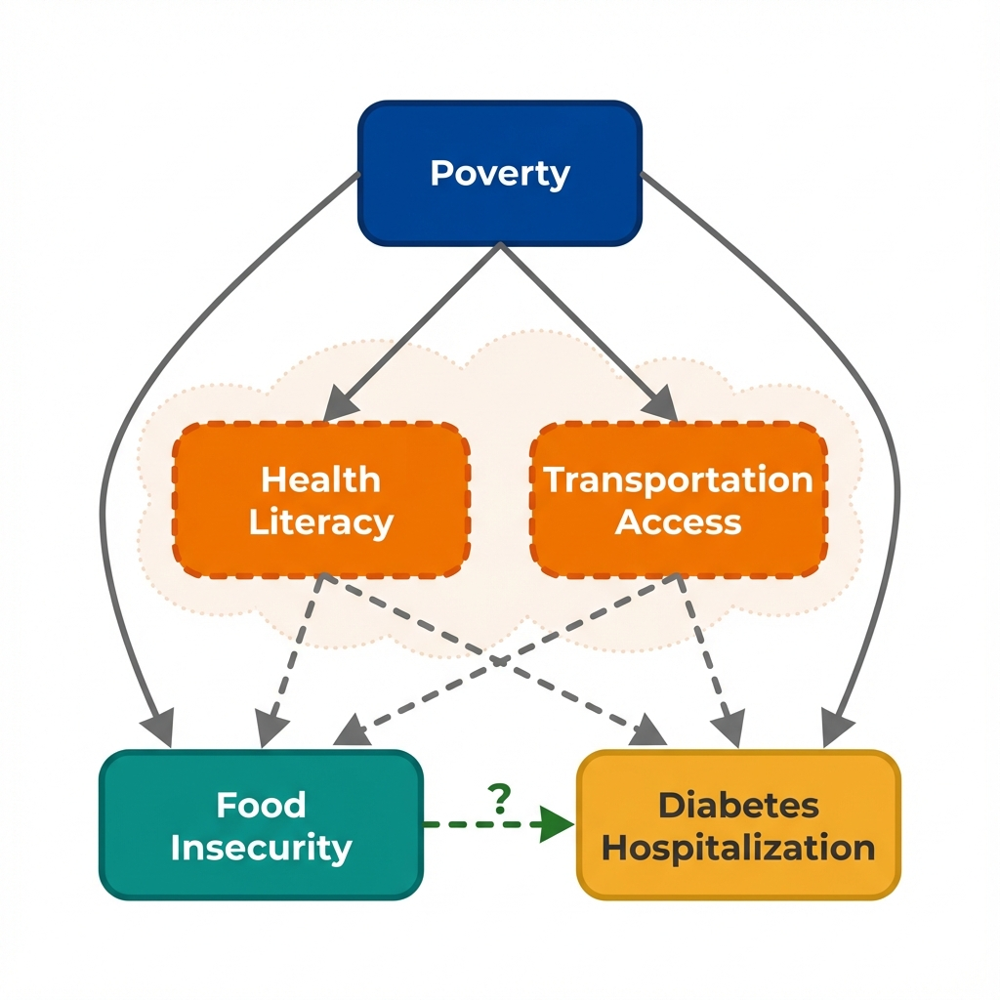

The Data
Each dot represents a California county. Counties with higher food insecurity rates tend to have higher diabetes hospitalization rates. Is this evidence that food insecurity worsens diabetes outcomes? (Data are simulated for illustration.)
Food Insecurity Rate vs Diabetes Hospitalizations
Next: The correlation is clear. But can we conclude that food insecurity causes worse diabetes outcomes?
The Problem
Counties with high food insecurity also tend to have high poverty rates. That's not a coincidence. Poverty limits access to food. But poverty also restricts access to healthcare, medications, and disease management resources. And here is the deeper problem: illness itself can cause poverty, creating a vicious cycle.

Arrows show potential causal relationships. The dashed arrow is what we want to know about.
Bidirectional Causation
Bidirectional causation occurs when:
- X causes Y (food insecurity may worsen diabetes)
- Y causes X (diabetes complications may cause job loss, medical debt, and poverty)
With cross-sectional data, we cannot distinguish these directions. We see both X and Y at the same moment in time.
Next: Can we isolate the food insecurity effect by comparing counties with similar poverty levels?
Seeing the Confounder
If poverty drives both food insecurity and hospitalization, then comparing counties within the same poverty level should show a weaker relationship. Use the filters below to stratify the data.
Next: The effect shrinks when we account for poverty. But what about factors we couldn't measure?
What We Can't Measure
Stratification helped with what we measured. But some factors that influence both food insecurity and diabetes hospitalization don't appear in any dataset. And the direction of causation itself remains uncertain.

Health Literacy & Transportation Access
Counties with low health literacy may have populations who struggle both to navigate food assistance programs AND to manage complex chronic diseases—creating a spurious link between food insecurity and hospitalization.
Similarly, limited transportation affects both grocery store access (driving food insecurity) AND access to outpatient diabetes care (driving hospitalizations).
These aren't in any standard dataset. We can't stratify by them. We can't adjust for them. Yet they could be driving both the "exposure" and the "outcome."
This is the problem of unmeasured confounding. No matter how carefully we adjust for what we can see, there may be hidden factors we can't account for.
Unmeasured Confounding
Unmeasured confounding occurs when a variable that affects both treatment and outcome is not observed in the data. Unlike measured confounders (which we can adjust for), unmeasured confounders remain invisible threats to causal claims.
Statistical methods cannot solve this problem. The solution requires finding variation in treatment that is independent of the confounder, often through study design rather than statistical adjustment.
Next: What questions should we ask to identify these hidden threats?
Questions to Consider
These questions help identify confounding threats that statistical adjustment cannot fix. They won't prove causation, but they'll reveal where the analysis is most vulnerable to bias.
What else differs between these counties?
Counties with high food insecurity might differ from other counties in many ways beyond just food access.
Is this a fair comparison?
Cross-sectional data shows us a snapshot, not a story. We're comparing different counties at one point in time.
Which came first?
In this data, we see food insecurity and hospitalization rates at the same time. We don't know the sequence.
What study design would help?
This observational data has limitations. A different approach might give stronger evidence.
Concepts Demonstrated in This Lab
Key Takeaway
No amount of statistical adjustment can fix a flawed comparison. When unmeasured factors drive both treatment and outcomes, the solution isn't better adjustment—it's finding sources of treatment variation that operate independently of unmeasured confounders. Policy changes, eligibility cutoffs, and timing differences can provide this. This is what economists mean by "identification."